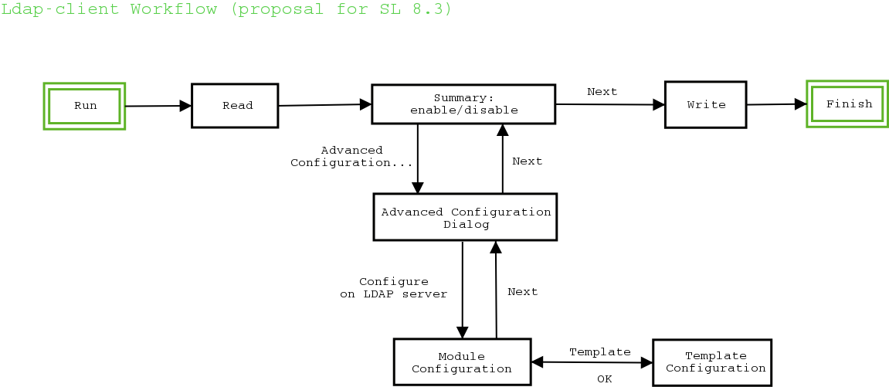
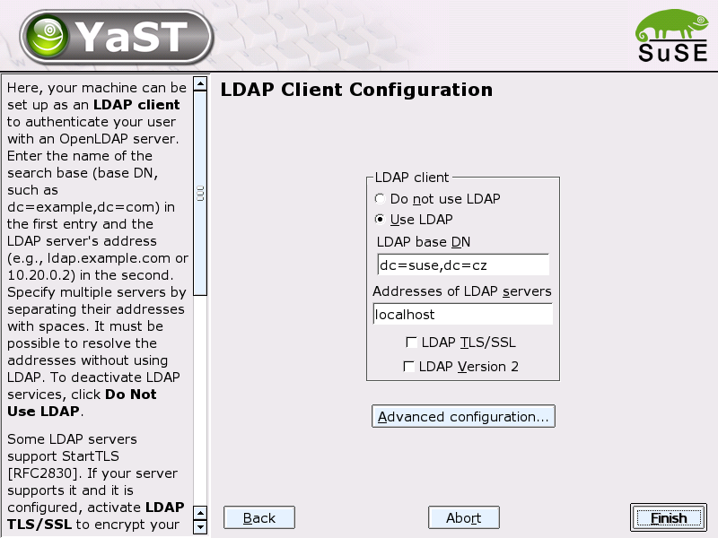
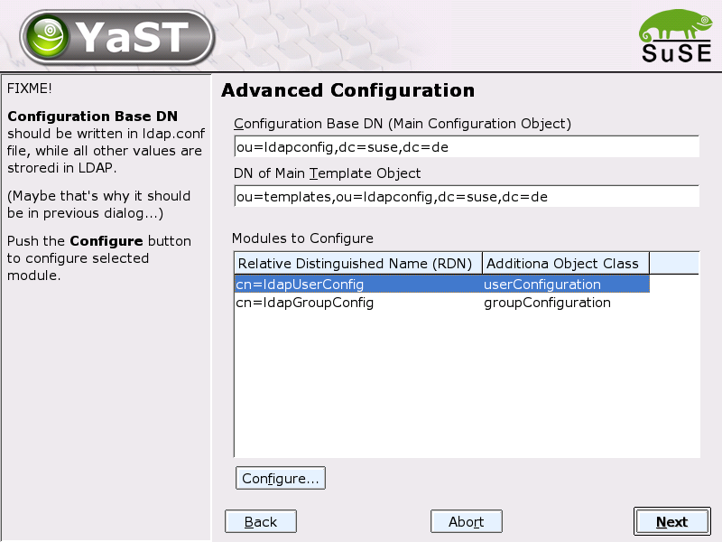
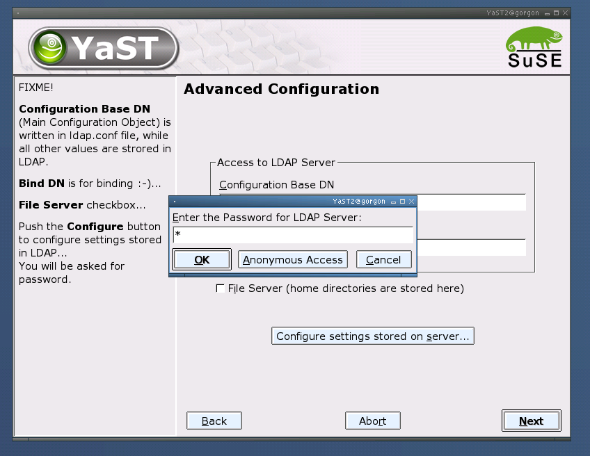
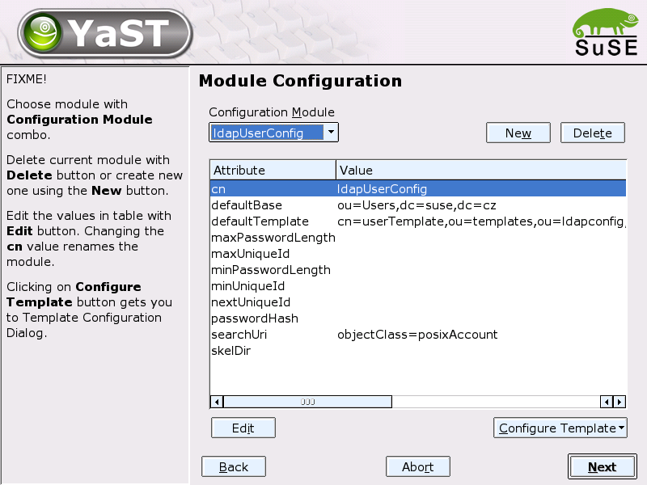

SL 8.2 (and even more later versions) should operate with LDAP much more than
it used to be. Documentation to all the large area called "LDAP enablement"
could be found at
http://w3.suse.de/~rhafer/LDAP
and in yast2/planning CVS directory.
These changes include (from YaST side)
According to Ralf's proposal, we must add some dialogs to configure various "modules" (e.g. user configuration). All the data should be stored in LDAP, in the local file (ldap.conf) there will be one new value (Main Configuration Object) which is the base DN for searching all other configuration data. Here is the dialog proposal.

This should remain simple is to enable fast configuration if user don't need much (or just for enabling/disabling the services).

Dialog for configuring main configuration DN's (base, template) and show the "modules", which could be configured (in the table). Problems

For configuration of one specified module (here the users configuration).
The table contains some values common for each module (like Default Base or
Default Filter) and some module-specific (like Password Length for users).
Maybe the ObjectClass should not be allowed to edit.
Problem

Configuration of template values. There is one table with default template
attributes (they cannot be deleted, only ignored) and one table for setting
the defaultValue attribute.
Problem
